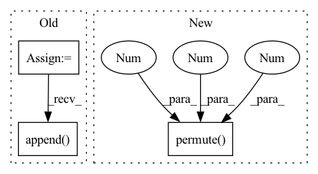

Pattern ID :1392

Before Change
def forward(self, latents, coeff, transform):
quantizeds = list()
codes = list()
logits = list()
for i, (xRaw, k) in enumerate(zip(latents, self._k)):
n, c, h, w = xRaw.shape
// [n, c, h, w] -> [h, w, n, c]
encoderIn = xRaw.permute(2, 3, 0, 1)
// [h, w, n, c] -> [h*w, n, c]
if True:
encoderIn = self._position(encoderIn).reshape(-1, n, c)
// encoderIn = encoderIn.reshape(-1, n, c)
// [h*w, n, c]
x = self._encoder(encoderIn)
else:
x = encoderIn.reshape(-1, n ,c)
// similar to scaled dot-product attention
// [h*w, N, c]
quantized, sample, logit = self._attention(x, i, False)
if True:
// [h*w, n, c]
posistedQuantized = self._position(quantized.reshape(h, w, n, c)).reshape(-1, n, c)
deTransformed = self._decoder(posistedQuantized, posistedQuantized).reshape(h, w, n, c).permute(2, 3, 0, 1)
else:
// [h*w, n, c] -> [n, c, h*w] -> [n, c, h, w]
deTransformed = quantized.reshape(h, w, n, c).permute(2, 3, 0, 1)
// mask = torch.rand_like(xRaw) > coeff
// mixed = mask * xRaw.detach() + torch.logical_not(mask) * deTransformed
// [n, c, h, w]
quantizeds.append(deTransformed)
codes.append(sample.argmax(-1).permute(1, 0).reshape(n, h, w))
logits.append(logit.permute(1, 0, 2).reshape(n, h, w, k))
return quantizeds, codes, logits
class TransformerQuantizerRein(nn.Module):
After Change
// [n, c, h, w]
quantizeds.append(deTransformed)
samples = [s.argmax(-1).permute(1, 0).reshape(n, h, w) for s in samples]
logits = [l.permute(1, 0, 2).reshape(n, h, w, k) for l in logits]
// codes.append(samples.argmax(-1).permute(1, 0).reshape(n, h, w))
// logits.append(logit.permute(1, 0, 2).reshape(n, h, w, k))
return quantizeds, codes, logits
In pattern: SUPERPATTERN
Frequency: 3
Non-data size: 3
Instances
Fragment ID: 4059964
Project Name: xiaosu-zhu/mcquic
Commit Name: 36075d9c06641e76ffab1b363262368618d53912
Time: 2021-03-18
Author: xiaosu.zhu@outlook.com
File Name: src/mcqc/models/quantizer.py
M Class Name: TransformerQuantizer
N Class Name: TransformerQuantizer
M Method Name: forward(4)
N Method Name: forward(4)
M Parent Class: nn.Module
N Parent Class: nn.Module
M File Name: src/mcqc/models/quantizer.py
N File Name: src/mcqc/models/quantizer.py
M Start Line: 114
M End Line: 144
N Start Line: 147
N End Line: 162
'>
Before Change
batch_size, num_of_vertices, in_channels, num_of_timesteps = x.shape
data = Data(edge_index=edge_index, edge_attr=None, num_nodes=num_nodes)
lambda_max = LaplacianLambdaMax()(data).lambda_max
outputs = []
for time_step in range(num_of_timesteps):
outputs.append(torch.unsqueeze(self.cheb_conv(x=x[:,:,:,time_step], edge_index=edge_index,
batch = batch_size, lambda_max=lambda_max), -1))
spatial_gcn = F.relu(torch.cat(outputs, dim=-1)) // (b,N,F,T)
// convolution along the time axis
After Change
batch = batch_size, lambda_max=lambda_max), -1))
spatial_gcn = F.relu(torch.cat(outputs, dim=-1)) // (b,N,F,T)
"""
tmp = x.permute(2,0,1,3).reshape(num_of_vertices, in_channels, num_of_timesteps*batch_size) // (N_nodes, F_in, B*T_in)
tmp = tmp.permute(2,0,1) // (B*T_in, N_nodes, F_in)
output = F.relu(self.cheb_conv(x=tmp, edge_index=edge_index,
batch = batch_size*num_of_timesteps, lambda_max=lambda_max))
'>
Fragment ID: 4059961
Project Name: benedekrozemberczki/pytorch_geometric_temporal
Commit Name: 509a541a01913f5b45859b801c48b5fd264bd94a
Time: 2021-03-18
Author: He_YX@outlook.com
File Name: torch_geometric_temporal/nn/convolutional/mstgcn.py
M Class Name: MSTGCN_block
N Class Name: MSTGCN_block
M Method Name: forward(4)
N Method Name: forward(4)
M Parent Class: nn.Module
N Parent Class: nn.Module
M File Name: torch_geometric_temporal/nn/convolutional/mstgcn.py
N File Name: torch_geometric_temporal/nn/convolutional/mstgcn.py
M Start Line: 36
M End Line: 41
N Start Line: 44
N End Line: 48
'>
Before Change
quantizeds = list()
codes = list()
logits = list()
allCodewords = list()
// probability = mixin / (mixin + 1.0)
// rolloutDistribution = Bernoulli(probs=torch.tensor(probability).to(latents[0].device))
for xRaw, prob, squeeze, codebook, k in zip(latents, self._prob, self._squeeze, self._codebook, self._k):
n, c, h, w = xRaw.shape
// [c, k]
codewords = codebook.weight
// [n, c, h, w] -> [h, w, n, c]
encoderIn = xRaw.permute(2, 3, 0, 1)
// [h, w, n, c] -> [h*w, n, c]
encoderIn = self._position(encoderIn).reshape(-1, n, c)
// [h*w, n, c]
// x = self._encoder(posisted)
x = self._encoder(encoderIn)
// x += torch.randn_like(x)
// x = self._dePosition(x.reshape(h, w, n, c)).reshape(-1, n, c)
// x = encoderIn
// [h*w, n, k]
// logit = prob(x, h, w)
// logit = torch.matmul(x / (x ** 2).sum(-1, keepdim=True), codewords / (codewords ** 2).sum(0, keepdim=True))
logit = x @ codewords
// soft = (logit / temperature).softmax(-1)
// if hard:
// hard = logit.argmax(-1)
// hard = F.one_hot(hard, k)
// sample = (hard - soft).detach() + soft
// else:
// sample = soft
sample = F.gumbel_softmax(logit, temperature, hard)
// sample = logit
// [h*w, N, c] <- [h*w, N, k] @ [k, C]
quantized = codebook(sample)
// quantized += torch.randn_like(quantized)
// quantized = sample
// normalize
// quantized /= (k - 0.5) / (2 * k - 2)
// [h*w, n, c]
// quantized -= 0.5 / (k - 1)
// quantized = squeeze(sample, h, w)
posistedQuantized = self._position(quantized.reshape(h, w, n, c)).reshape(-1, n, c)
// mixed = (mixin * encoderIn / (mixin + 1)) + (quantized / (mixin + 1))
// mask = rolloutDistribution.sample((h*w, n, 1)).bool()
// mixed = mask * encoderIn.detach() + torch.logical_not(mask) * quantized
// [h*w, n, c] -> [n, c, h*w] -> [n, c, h, w]
deTransformed = self._decoder(posistedQuantized, posistedQuantized).reshape(h, w, n, c).permute(2, 3, 0, 1)
// deTransformed = quantized.permute(1, 2, 0).reshape(n, c, h, w)
// deTransformed = self._dePosition(deTransformed.reshape(h, w, n, c)).permute(2, 3, 0, 1)
// [n, c, h, w]
quantizeds.append(deTransformed)
codes.append(sample.argmax(-1).permute(1, 0).reshape(n, h, w))
logits.append(logit.reshape(n, h, w, k))
allCodewords.append(codewords.t())
return quantizeds, codes, logits, allCodewords
class TransformerQuantizerRein(nn.Module):
After Change
// [n, c, h, w]
quantizeds.append(deTransformed)
codes.append(sample.argmax(-1).permute(1, 0).reshape(n, h, w))
logits.append(logit.permute(1, 0, 2).reshape(n, h, w, k))
return quantizeds, codes, logits
'>
Fragment ID: 4060072
Project Name: xiaosu-zhu/mcquic
Commit Name: 594ba7cd5c9d147e95ba5bd0b842270302dea2a2
Time: 2021-03-02
Author: xiaosu.zhu@outlook.com
File Name: src/mcqc/models/quantizer.py
M Class Name: TransformerQuantizer
N Class Name: TransformerQuantizer
M Method Name: forward(2)
N Method Name: forward(4)
M Parent Class: nn.Module
N Parent Class: nn.Module
M File Name: src/mcqc/models/quantizer.py
N File Name: src/mcqc/models/quantizer.py
M Start Line: 282
M End Line: 342
N Start Line: 295
N End Line: 320